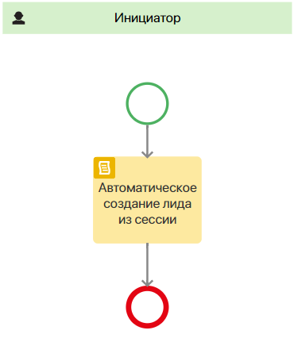
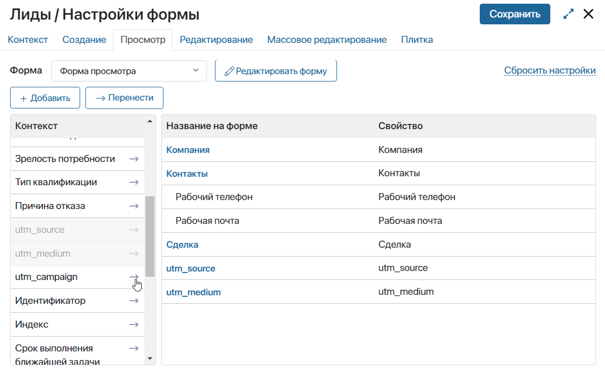
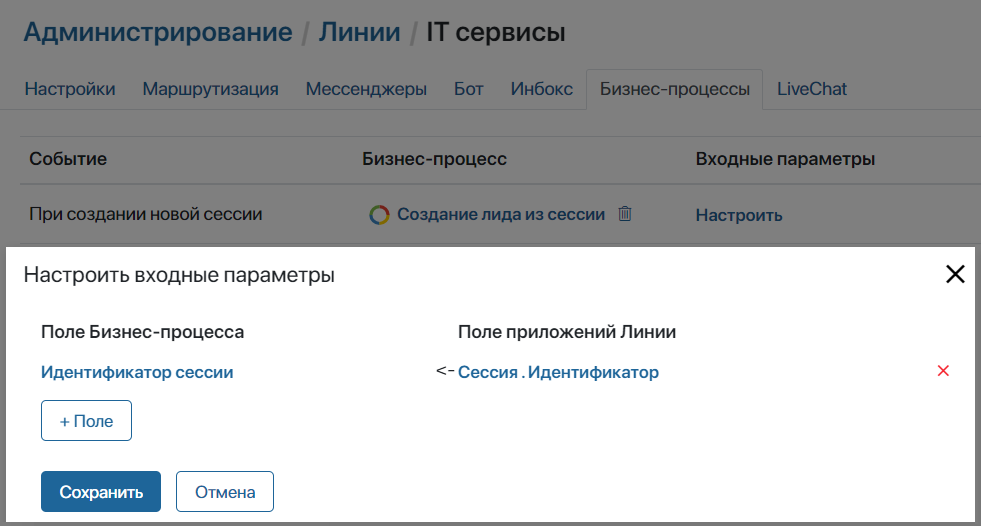

При создании новой сессии с пользователем, обратившимся в линию через LiveChat, в ELMA365 автоматически фиксируются следующие UTM-метки:
- utm_source — источник перехода;
- utm_medium — тип трафика;
- utm_campaign — название рекламной кампании;
- utm_content — дополнительная информация, которая помогает различать объявления;
- utm_term — ключевая фраза.
С помощью этих меток вы можете отслеживать, откуда приходит наибольшее количество потенциальных клиентов и какие темы наиболее востребованы. Зафиксированные метки отображаются на странице сессии на правой боковой панели чата.
Также вы можете передавать значения меток в бизнес-процесс. Для этого воспользуйтесь блоком Скрипт. Например, вы можете настроить процесс, в котором значения UTM‑меток будут выводиться в карточку лида после его автоматического создания. Подробнее о написании скриптов читайте в справке ELMA365 TS SDK в разделе «Линии».
Пример использования UTM-меток в бизнес-процессе
Рассмотрим пример, в котором при создании новой сессии с пользователем из LiveChat в ELMA365 будет автоматически создаваться новый лид с помощью бизнес-процесса. При этом в карточке лида будут отображаться зафиксированные UTM‑метки.
- Перейдите в приложение Лиды из раздела CRM.
- Нажмите на значок шестерёнки напротив названия приложения и выберите Бизнес-процессы.
- В правом верхнем углу нажмите кнопку + Процесс. В открывшемся окне введите название процесса, например, Создание лида из сессии.
- В открывшемся дизайнере бизнес-процесса откройте вкладку Контекст и добавьте переменную со следующими параметрами:
- Отображаемое имя* — Лид;
- Имя свойства* — opportunity;
- Тип* — одиночное Приложение;
- Приложение* — Лиды.
- Затем создайте ещё одну переменную:
- Отображаемое имя* — Идентификатор сессии;
- Имя свойства* — session_id;
- Тип* — Строка.
- Перейдите на вкладку Скрипты и добавьте следующий код:
async function createOpportunity(): Promise<void> {
if(Context.data.session_id) {
const session = await System.lines.sessions.search().where(item => item.__id.eq(Context.data.session_id!)).first();
if(session && session.data._clients && session.data._clients.length > 0) {
const client = await System.lines.clients.search().where(item => item.__id.eq(session.data._clients![0].id)).first();
if(client) {
if(client.data._applicationItem) {
const new_opportunity = await Context.fields.opportunity.app.create();
new_opportunity.data._contacts = [client.data._applicationItem as any];
new_opportunity.data.utm_source = (<any>client.data._extraData).utm_source;
new_opportunity.data.utm_medium = (<any>client.data._extraData).utm_medium;
new_opportunity.data.utm_campaign = (<any>client.data._extraData).utm_campaign;
await new_opportunity.save();
Context.data.opportunity = new_opportunity;
}
}
}
}
}
- Перейдите на вкладку Схема и вынесите на поле для моделирования элемент Скрипт. Дважды нажмите на него и в открывшемся окне настроек в поле Функция укажите функцию
createOpportunity, созданную на вкладке Скрипты. Нажмите Сохранить.
В нашем примере для автоматического создания лида и получения UTM-меток достаточно только элемента Скрипты, поэтому схема процесса может выглядеть следующим образом:

- На верхней панели дизайнера бизнес-процессов нажмите Сохранить, а затем Опубликовать.
- Вынесите свойства для UTM‑меток в карточку просмотра лида. Для этого нажмите на значок шестерёнки справа от названия приложения Лиды и выберите Настройка формы. В открывшемся окне перейдите на вкладку Просмотр и перенесите свойства для UTM‑меток, расположенные в левой панели, на форму:

- Сохраните форму и перейдите в раздел Администрирование > Линии.
- Откройте вкладку Бизнес-процессы. Напротив события При создании новой сессии нажмите Выбрать и укажите созданный ранее процесс Создание лида из сессии.
- В столбце Входные параметры нажмите Настроить. В открывшемся окне нажмите кнопку + Поле и выберите свойство Идентификатор сессии, созданное на шаге 5. В столбце Поле приложений Линии укажите Сессия > Идентификатор.

- Нажмите кнопку Сохранить. После закрытия окна сохраните изменения, внесённые на вкладку Бизнес-процессы.
После этого при создании новой сессии с пользователем из LiveChat в разделе CRM будет создан новый лид, в карточке которого будут отображаться зафиксированные UTM метки.